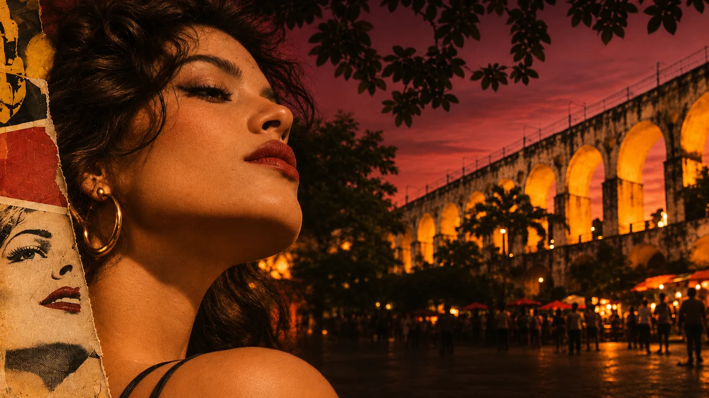
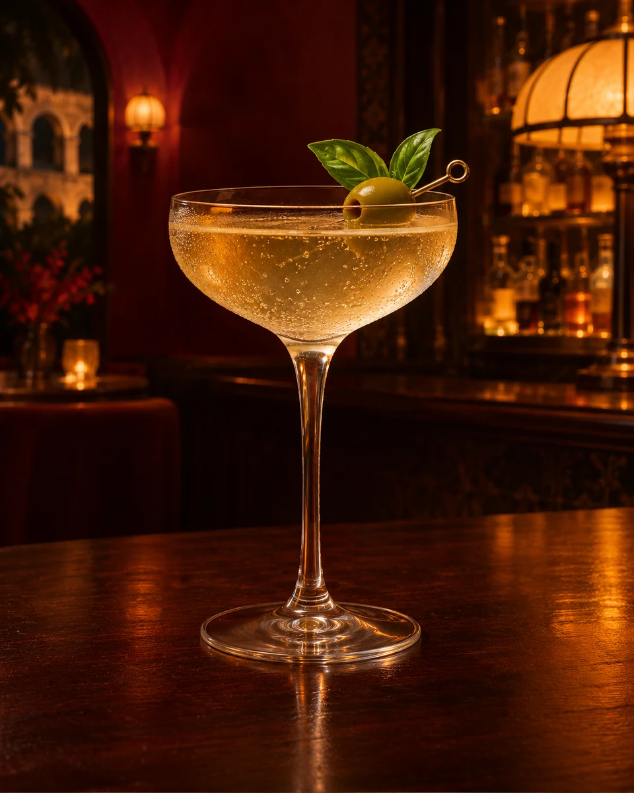
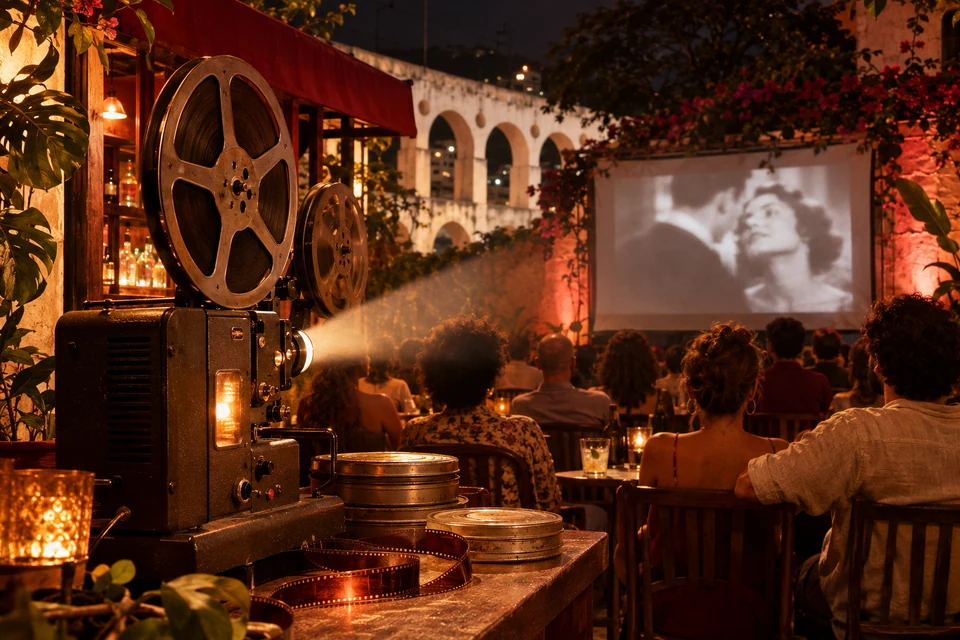
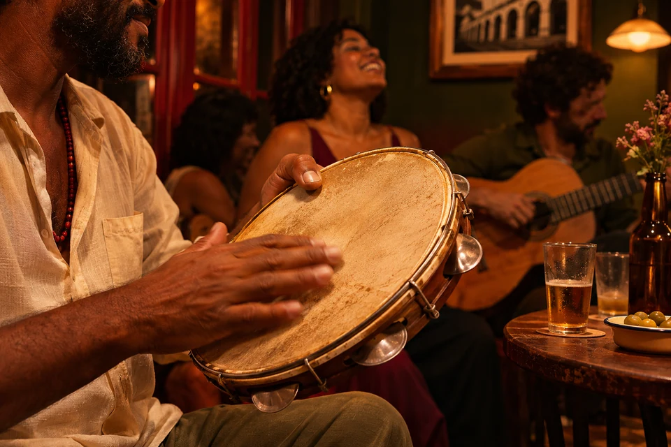
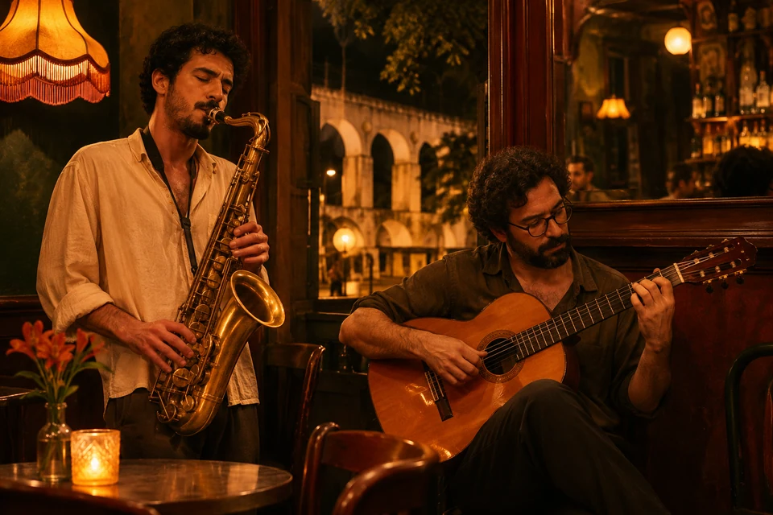
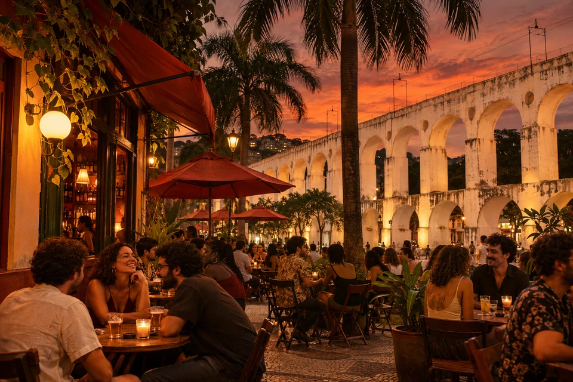

Drinks,
cultura e
boemia
Em cartaz
Um bar carioca
onde a noite
sempre rende
um bom filme.

Nossa
cartela
de clássicos
Drinks que vão do clássico ao autoral, com ingredientes brasileiros, frescor carioca e rostinho de estrela.
Ver cardápioCoquetéis autorais
1 de 6: Negroni da Lapa
Em cartaz
no Olivo

Sex · 24 janCine LapaSessão ao ar livre + trilha em vinil
Sáb · 25 janRoda de SambaSamba de raiz na Lapa
Dom · 26 janNoite BossaBossa, jazz e canções brasileiras
A Lapa
é o nosso
cinema
Entre os arcos, a música, os encontros e os bons drinks, o Olivo celebra o que o Rio tem de mais vivo: sua noite, sua gente, sua cultura.
Conheça o bar